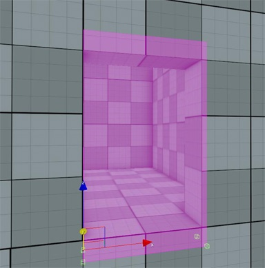
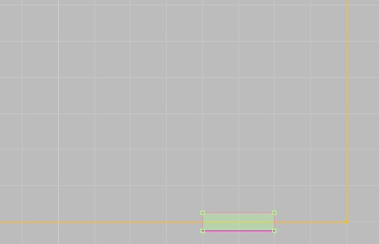

Обзор
С помощью порталов внутри VisAreas можно вырезать отверстия, чтобы создать «вход». Порталы должны быть меньше формы VisArea, но достаточно толстыми, чтобы выступать как внутрь, так и наружу из VisArea, как дверь.
Порталы можно включать и отключать через FlowGraph и может иметь несколько порталов в одном VisArea.
Свойства
Недвижимость | Описание |
|---|---|
Высота | Указывает высоту портала. |
Дисплей заполнен | Просто для видимости в редакторе эта опция определяет, должна ли область отображаться как заполненная или нет. |
Под воздействием Солнца | Указывает, могут ли тени из мира за пределами визовой зоны перемещаться внутрь. |
Игнорировать цвет неба | Если эта опция отключена, окружающий цвет (цвет неба в окне времени суток) не используется в помещении. |
Игнорировать GI | Если это правда, глобальное освещение не будет использоваться внутри этого объекта. |
Посмотреть соотношение расстояний | Указывает, насколько далеко отображается область видимости. |
Только небо | Гарантирует, что за пределами визовой зоны будет виден только скайбокс. |
Океан виден | Указывает, должна ли визуализация океана быть видна внутри области видимости. |
Игнорировать на улице AO | Игнорирует внешний вид Окружающая окклюзия. |
Настройка порталов
Порталы используются для добавления визуального «входа» в Район Вис и позволяет пользователям просматривать и плавно переходить в область видимости и выходить из нее.
- Создайте форму портала в соответствии с размером входа.
- Размер должен быть как можно меньшим (также размер портала не может быть больше самой области видимости).

- Портал должен наполовину находиться внутри области обзора (помогает использование окон просмотра сверху и спереди).

Включение и отключение порталов через Flow Graph
В Flow Graph узел для включения/отключения порталов можно найти в разделе Двигатель → PortalSwitch.
- Если на уровне доступна дверь, портал можно отключить, когда дверь закрыта, чтобы сэкономить ресурсы.
- Сам Портал не может быть назначен этому узлу; вместо этого дверь который находится внутри портала должно быть назначено.
- Состояние двери можно проверить и в соответствии с этим включить и отключить Портал.
При редактировании формы или области можно привязать вершину к местности или физическим объектам, используя Ctrl + Shift + LMB.
Это справедливо для всех объектов Area, кроме окклюдеров.